EAGLE：Speculative Sampling 需要重新思考特征不确定性
Yuhui Li♠ Fangyun Wei‡ Chao Zhang♠ Hongyang Zhang♣†
♠北京大学 ‡Microsoft Research ♣滑铁卢大学 †Vector Institute
hongyang.zhang@uwaterloo.ca
https://github.com/SafeAILab/EAGLE
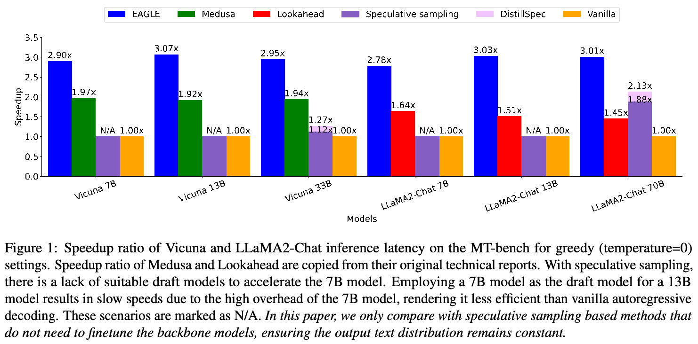
摘要
自回归 decoding 使大语言模型（LLM）的推理耗时较长。本文重新审视 speculative sampling，并得到两个关键观察。首先，特征（倒数第二层）层面的自回归比 token 层面的自回归更简单。其次，特征（倒数第二层）层面自回归中固有的不确定性限制了其性能。基于这些认识，我们提出 EAGLE（Extrapolation Algorithm for Greater Language-model Efficiency，即提高语言模型效率的外推算法），这是一个简单而高效的 speculative sampling 框架。通过引入提前一个时间步的 token 序列，EAGLE 有效消除了这种不确定性，能够以极低开销准确预测倒数第二层特征。我们对 EAGLE 进行了全面评估，涵盖 Vicuna 和 LLaMA2-Chat 系列的全部模型、MoE 模型 Mixtral 8x7B Instruct，以及对话、代码生成、数学推理和指令遵循任务。对于 LLaMA2-Chat 70B，EAGLE 实现了 2.7–3.5 倍的延迟加速和两倍的吞吐量，同时保持生成文本的分布不变。
1. 引言
作为大语言模型（LLM）事实上的标准，自回归 decoding 按顺序生成 token，导致生成速度慢、成本高。基于 speculative sampling（Leviathan et al., 2023; Chen et al., 2023a）的方法将这一过程划分为低成本的草稿阶段和针对草稿 token 的并行验证阶段，从而能够在一次 LLM 前向计算中验证多个 token。（接下页）
（接上页）这些方法通过每次前向计算生成多个 token 来加速生成。更重要的是，验证阶段确保文本分布与原始 LLM 的 decoding 结果精确一致，保持生成内容的完整性。
应用 speculative sampling 的关键，是找到功能类似原始 LLM、但延迟更低的草稿模型，通常采用同一 LLM 系列中参数量较少的版本。例如，LLaMA2（Touvron et al., 2023）系列包含 7B、13B 和 70B 参数模型，使用 7B 模型作为 70B 模型的草稿模型是可行的，但很难为最小的 7B 版本找到合适的草稿模型。另一种选择可能是 TinyLLaMA（Zhang et al., 2024），但 LLaMA2-Chat 与 TinyLLaMA-Chat 的指令模板不一致，因此这不适用于经过指令微调的模型。尽管 7B 模型可用作草稿模型，其高开销仍会削弱加速收益。专门为 speculative sampling 训练一个大小适中的新草稿模型也不是理想方案，因为成本很高：TinyLLaMA 使用 3,000B token 训练，而 EAGLE 仅使用 2–4B token 训练。
提高 speculative sampling 加速效果的关键，在于减少时间开销，以及提高原始 LLM 对草稿的接受率（Chen et al., 2023b; Xia et al., 2023; Santilli et al., 2023）。许多方法着重减少草稿阶段的开销。Lookahead（Fu et al., 2023）采用 n-gram 和 Jacobi 迭代，而 Medusa（Cai et al., 2023）使用一组 MLP，根据原始 LLM 的倒数第二层特征预测 token。这些策略显著降低了草稿生成的延迟，改善了加速效果。然而，生成草稿的准确率较低，限制了其效果：Medusa 的准确率约为 0.6，Lookahead 更低。相比之下，我们的方法准确率约为 0.8。
为克服这些局限，我们提出 EAGLE（Extrapolation Algorithm for Greater Language-model Efficiency），这是一种高效的 speculative sampling 方法，建立在以下两个观察之上。
首先，特征层面的自回归比 token 层面更简单。本文中的“特征”指原始 LLM 在 LM head 之前的倒数第二层特征。相比只是自然语言简单变换的 token 序列，特征序列表现出更强的规律性。在特征层面进行自回归处理，再使用原始 LLM 的 LM head 得到 token，效果优于直接自回归预测 token。如图 4 所示，自回归预测特征表现更好，加速比从 1.5 倍提高到了 1.9 倍。
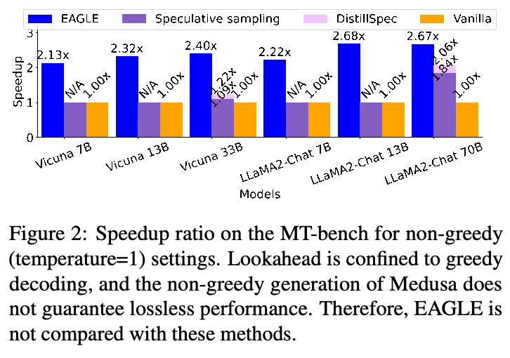
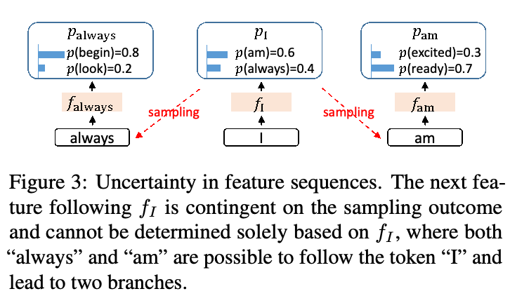
其次，采样过程固有的不确定性显著限制了下一特征预测的性能。在文本生成中，目标 LLM 预测 token 分布并据此采样，从而引入随机性。特征是高维、连续的，无法采用类似处理方式。如图 3 所示，采样出“am”或“always”等不同 token，会得到不同的特征序列，从而在特征层面自回归中引入歧义。Medusa 在预测间隔 token 时也面临类似问题：对于输入 \(f_{\mathrm{I}}\)，真正的目标究竟应为 \(p_{\mathrm{am}}\) 还是 \(p_{\mathrm{always}}\)，存在不确定性。为解决这一问题，EAGLE 将提前一个时间步、包含采样结果的 token 序列输入草稿模型。在图 3 的例子中，这意味着根据 \(f_{\mathrm{I}}\) 和 \(t_{\mathrm{always}}\) 预测 \(f_{\mathrm{always}}\)，根据 \(f_{\mathrm{I}}\) 和 \(t_{\mathrm{am}}\) 预测 \(f_{\mathrm{am}}\)。如图 4 所示，消除不确定性使加速比进一步从 1.9 倍提高到 2.8 倍。
我们分别使用 MT-bench、HumanEval、GSM8K 和 Alpaca 数据集，在对话、代码生成、数学推理和指令遵循任务上进行了实验。测试的 LLM 包括 Vicuna 和 LLaMA2-Chat 系列的全部模型，以及 Mixtral 8x7B Instruct。对于 LLaMA2-Chat 70B，EAGLE（接下页）
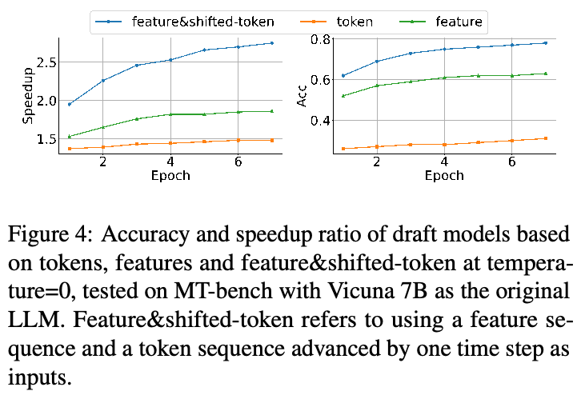
（接上页）实现了 2.7–3.5 倍的加速比、两倍的吞吐量，并从理论上保证生成文本的分布不变。图 1 和图 2 展示了 EAGLE 在 MT-bench（Zheng et al., 2023）上的性能。该基准高度贴近实际，模拟真实应用和现实场景，包括类似于与 ChatGPT 对话的多轮指令。我们选择这一基准，是因为 Lookahead、Medusa 等当前最先进的方法也使用它展示加速比。这一选择便于将我们的方法与这些方法进行公平、直接的比较。相比近期提出的基于 speculative sampling 的 Lookahead 和 Medusa 框架，EAGLE 分别实现了 1.7–2.1 倍和 1.5–1.6 倍的加速。EAGLE 可以与量化、编译等其他加速或提高吞吐量的方法并用。将 EAGLE 与这些技术结合，可进一步降低 LLM 系统的运行成本。例如，结合 gpt-fast（PyTorch Labs, 2023），EAGLE 在单块 RTX 3090 GPU 上将 LLaMA2-Chat 7B 的 decoding 速度提高至 160.4 token/s。
EAGLE 的训练成本很低。对于 LLaMA2-Chat 70B 模型，EAGLE 使用 ShareGPT 数据集中不超过 70k 条对话，训练一个参数量不足 1B 的 decoder 层。在 4 块 A100（40G）GPU 上，训练可在 1–2 天内完成。7B、13B 和 33B 模型的 EAGLE 训练甚至可以在一个 RTX 3090 节点上于 1–2 天内完成。在实际应用中，EAGLE 只需训练一次，就可以为每次查询提供加速。随着查询数量增加，分摊到每次查询上的 EAGLE 训练成本可以忽略不计。
除性能外，EAGLE 还具有以下优点：
- 通用性：EAGLE 可应用于任何自回归 LLM（至少在原理上如此）。我们以零样本方式，将 EAGLE 应用于 LLaMA2-Chat（7B、13B、70B）、Vicuna（7B、13B、33B）和 Mixtral 8x7B Instruct，并在 MT-bench、GSM8K、HumanEval 和 Alpaca 数据集上评估。EAGLE 遵循 LLM 社区常用的零样本／少样本设置。所有实验使用相同的权重，仅在 ShareGPT 数据集上训练，未在评估数据集上进行任何额外训练。该方法只向 LLM 添加一个轻量插件（单个 transformer decoder 层），易于部署到生产环境。
- 可靠性：EAGLE 不对原始 LLM 进行任何微调，并且在贪心和非贪心设置下，均从理论上保证输出分布不变。这与 Lookahead 和 Medusa 形成鲜明对照：后两者要么仅关注贪心设置，要么无法保证在这些设置中保持分布不变。
2. 预备知识
符号约定。本文中，“目标 LLM”指需要加速的 LLM，“草稿模型”指用于生成草稿的模型。“特征”一般指 LLM 的倒数第二层特征，即 LM head 之前的隐藏状态。token 用小写 \(t\) 表示，其 embedding 用 \(e\) 表示，特征用 \(f\) 表示，分布用 \(p\) 表示。序列用大写字母表示，例如 \(T_{i:j}\) 表示 \((t_i,t_{i+1},\ldots,t_j)\)。在 LLM 中，输入 \(T_{1:j}\) 经过 embedding 层转换为 embeddings \(E_{1:j}\)，再转换为特征 \(F_{1:j}\)，LM Head 将 \(f_j\) 映射为分布 \(p_{j+1}=\operatorname{LM\_Head}(f_j)\)，并采样得到下一个 token \(t_{j+1}\)。对于任意整数 \(j\geq1\)，token 层面的常规自回归可表示为 \(T_{1:j}\to E_{1:j}\to f_j\to p_{j+1}\to t_{j+1}\)。
Speculative sampling。Speculative sampling 包含草稿和验证两个阶段；草稿阶段使用较小的模型，生成 \(\gamma\) 个 token \(\hat T_{j+1:j+\gamma}\) 及其分布 \(\hat P_{j+1:j+\gamma}\)。验证阶段通过目标 LLM 的一次前向计算得到概率 \(P_{j+1:j+\gamma}\)。随后按顺序评估 token，token \(\hat t_{j+i}\) 的接受概率为 \(\min(1,p_{j+i}(\hat t_{j+i})/\hat p_{j+i}(\hat t_{j+i}))\)。一旦拒绝某个 token \(\hat t_{j+i}\)，所有后续 token 都被丢弃，并根据分布 \(\operatorname{norm}(\max(0,p_{j+i}-\hat p_{j+i}))\) 重新采样该 token。Speculative sampling（Leviathan et al., 2023）附录 A.1 已证明，这一方法等价于直接从目标 LLM 中采样。EAGLE 采用该方法，确保在贪心和非贪心设置下，生成文本的分布都保持不变。
3. EAGLE
与其他基于 speculative sampling 的方法一致，EAGLE 包含草稿阶段和验证阶段。
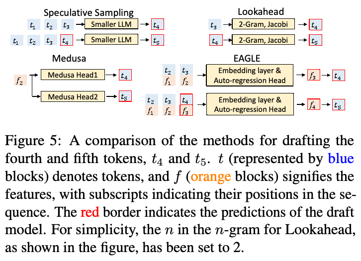
3.1. 草稿阶段
EAGLE 与其他方法的主要区别体现在草稿阶段。图 5 示意了不同方法的草稿阶段。Speculative sampling（Leviathan et al., 2023; Chen et al., 2023a）和 Lookahead（Fu et al., 2023）根据 token 预测 token。Medusa（Cai et al., 2023）使用目标 LLM 的特征 \(f_2\)，独立预测 \(t_4\) 和 \(t_5\)。EAGLE 使用特征序列 \((f_1,f_2)\) 和提前一个时间步的 token 序列 \((t_2,t_3)\) 预测 \(f_3\)。根据 \(p_4=\operatorname{LM\_Head}(f_3)\) 采样得到 \(t_4\)。随后，将 \(f_3\) 和 \(t_4\) 拼接到输入序列，预测下一个特征 \(f_4\)，并采样下一个 token \(t_5\)。
如图 6 所示，EAGLE 的草稿模型由 embedding 层、LM Head 和自回归头三个模块组成。embedding 层和 LM Head 使用目标 LLM 的参数，无需额外训练。草稿模型接收形状为 (bs, seq_len, hidden_dim) 的特征序列，以及形状为 (bs, seq_len) 的提前一步的 token 序列。随后，它将 token 序列转换为形状为 (bs, seq_len, hidden_dim) 的 token embedding 序列，将二者拼接为形状为 (bs, seq_len, 2×hidden_dim) 的融合序列。自回归头由一个 FC 层和一个 decoder 层组成。FC 层将融合序列的维度降至 (bs, seq_len, hidden_dim)，随后使用 decoder 层预测下一个特征。LM Head 根据该特征计算分布，并从中采样下一个 token。最后，将预测特征和采样 token 拼接到输入中，继续自回归过程。
EAGLE 使用 tree attention 生成树形草稿，通过 \(m\) 次前向计算，得到深度为 \(m\)、token 数量超过 \(m\) 的草稿树。例如，图 6 中 EAGLE 只需 3 次前向计算，即可生成包含 10 个 token 的树。EAGLE 实际使用的树结构详见附录 A.1。
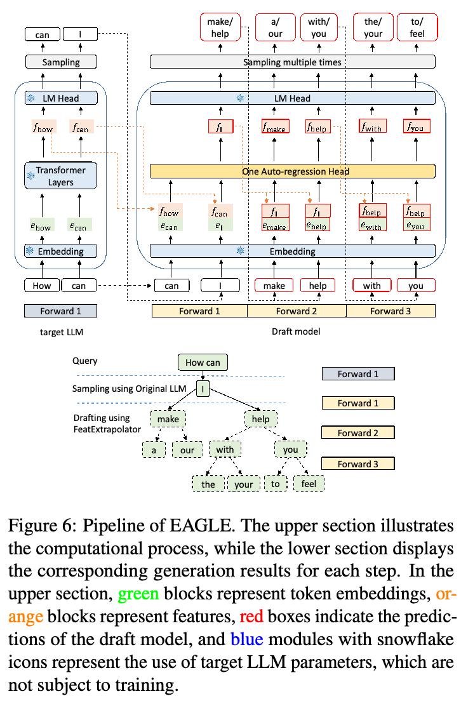
3.2. 草稿模型的训练
预测下一个特征是一项回归任务，我们为此使用 Smooth L1 loss（见图 5 的 EAGLE）：
\[L_{\mathrm{reg}}=\operatorname{Smooth\ L1}\bigl(f_{i+1},\operatorname{Draft\ Model}(T_{2:i+1},F_{1:i})\bigr).\]
预测特征是草稿模型的中间目标，最终目标是预测 token，从而生成 token 序列。因此，我们也采用分类损失，直接针对这一最终目标进行优化：
\[p_{i+2}=\operatorname{Softmax}(\operatorname{LM\_Head}(f_{i+1})),\] \[\hat p_{i+2}=\operatorname{Softmax}(\operatorname{LM\_Head}(\hat f_{i+1})),\] \[L_{\mathrm{cls}}=\operatorname{Cross\ Entropy}(p_{i+2},\hat p_{i+2}).\]
结合回归损失与分类损失，我们用组合损失函数 \(L=L_{\mathrm{reg}}+w_{\mathrm{cls}}L_{\mathrm{cls}}\) 训练自回归头。通常，分类损失在数值上比回归损失大一个数量级。因此，我们将 \(w_{\mathrm{cls}}\) 设为 0.1。（本句原文跨页，已接续。）
（本页开头关于分类损失量级与权重的跨页句已接续至第 4 页。）
理想情况下，EAGLE 的自回归头应使用目标 LLM 自回归生成的文本来训练，但这种方式成本很高。幸运的是，EAGLE 对训练数据不敏感（消融研究见第 4.3.3 节）。我们没有使用目标 LLM 生成的文本，而是使用固定数据集，大幅减少开销。在草稿阶段，EAGLE 对特征进行自回归处理。特征的不准确可能导致误差积累。为缓解这一问题，我们采用数据增强，在训练时向目标 LLM 的特征中添加从均匀分布 \(U(-0.1,0.1)\) 采样的随机噪声（Jain et al., 2023）。
3.3. 验证阶段
借助 tree attention，目标 LLM 通过一次前向计算，得到树形草稿中每个 token 的概率。在草稿树的每个节点，我们与 SpecInfer（Miao et al., 2023）一致，递归应用 speculative sampling 算法进行采样或调整分布（详见附录 A.2），确保输出文本的分布与目标 LLM 一致。同时，我们记录被接受的 token 及其特征，供下一轮草稿阶段使用。
4. 实验
模型与任务。我们在 Vicuna 模型（7B、13B、33B）、LLaMA2-Chat 模型（7B、13B、70B）以及 Mixtral 8x7B Instruct 上进行实验，覆盖了当前主流 LLM 的常见规模。我们分别使用 MT-bench（Zheng et al., 2023）、HumanEval（Chen et al., 2021）、GSM8K（Cobbe et al., 2021）和 Alpaca（Taori et al., 2023）数据集，在多轮对话、代码生成、数学推理和指令遵循等多项任务上评估 EAGLE。Speculative sampling（Leviathan et al., 2023）采用 batch size 为 1 的实验设置，DistillSpec（Zhou et al., 2023）和 BiLD（Kim et al., 2023）等后续工作也采用了这一设置。同样，我们的大多数实验也采用该设置。batch size 大于 1 的实验见第 4.4 节。
指标。与其他基于 speculative sampling 的方法一样，EAGLE 主要关注延迟，而非吞吐量。我们使用以下指标评估加速效果：
- 实际耗时加速比：实际测试中，相对于常规自回归 decoding 的加速比。
- 平均接受长度 \(\tau\)：目标 LLM 每次前向计算平均接受的 token 数。
- 接受率 \(\alpha\)：草稿阶段接受的 token 数与生成的 token 数之比，用于衡量草稿准确性。由于树形草稿会在每个位置采样多个 token、却仅接受一个，因此该指标不太适合树形草稿。故测量此指标时，我们使用不带 tree attention 的链式草稿，与 speculative sampling 和 DistillSpec 保持一致。EAGLE 的草稿模型接收特征序列和 token 序列作为输入。特征的自回归处理可能传播误差，因此我们将接受率记为 \(n\text{-}\alpha\)，表示输入包含 \(n\) 个由草稿模型预测、可能不准确的特征时的接受率。
EAGLE 的加速从理论上保证目标 LLM 的输出分布不变。因此，评估 EAGLE 生成结果的质量既无必要，也无意义。
训练。我们固定目标 LLM。EAGLE 在 ShareGPT 数据集上使用 68,000 轮对话训练，学习率设为 3e-5。我们采用 AdamW 优化器，将 \((\beta_1,\beta_2)\) 设为 (0.9, 0.95)，并进行阈值为 0.5 的 gradient 裁剪。对应于 7B、13B、33B 和 70B 模型，EAGLE 的可训练参数量分别为 0.24B、0.37B、0.56B 和 0.99B。对于 MoE 模型 Mixtral 8x7B，EAGLE 的可训练参数量为 0.28B。EAGLE 的训练成本很低；对于 70B 模型，自回归头可以在一台 A100 40G 服务器上于 1–2 天内训练完成。
4.1. 有效性
图 1、图 2 和表 1 展示了 EAGLE 的加速比。EAGLE 在 temperature=0 时的加速效果优于 temperature=1。例如，对于 LLaMA2-Chat 13B，temperature=0 时的加速比为 3.01–3.76 倍，而 temperature=1 时为 2.66–2.89 倍。EAGLE 在代码生成任务（HumanEval）上取得了最佳加速效果。这是因为代码中存在大量固定模板，更容易为这些模板生成草稿。相比近期推出的基于 speculative sampling 的 Lookahead 和 Medusa，EAGLE 分别快 1.70–2.08 倍和 1.47–1.60 倍。在 Vicuna 和 LLaMA2-Chat 系列上采用 speculative sampling 存在困难。7B 模型没有合适的草稿模型。对于其他规模，我们用 7B 模型作草稿模型，遍历了 2 至 10 的草稿长度，并报告最高加速比。对于 13B 模型，我们未观察到速度提升。对于 33B 和 70B 模型，加速比分别为 1.12 倍和 1.88 倍。为公平比较 DistillSpec，我们使用与 EAGLE 相同的训练数据。此外，其散度函数采用 DistillSpec 论文附录 A.1 详述的 FKL。蒸馏虽然略微改善了加速比，但提升有限，原因是（接下页）
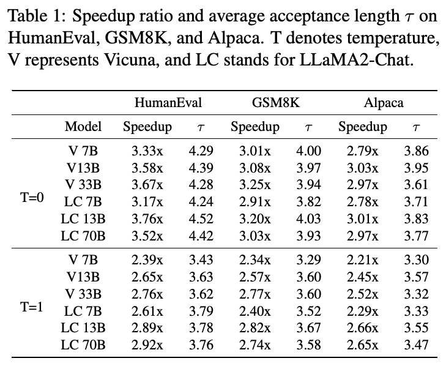
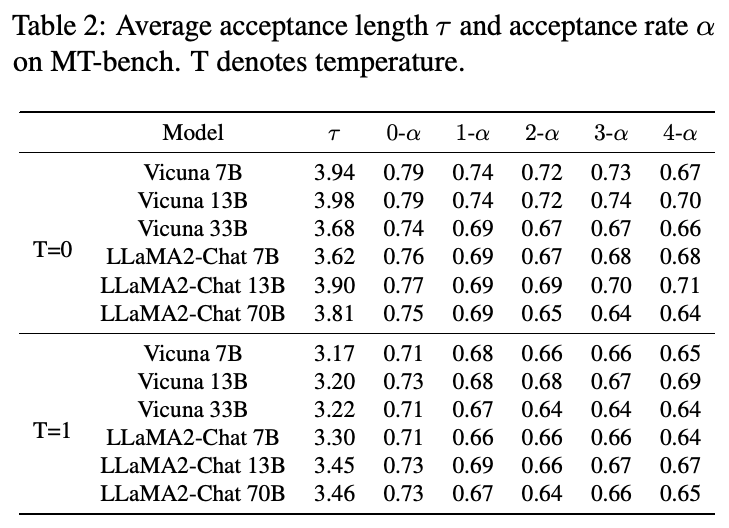
（接上页）蒸馏旨在提高草稿模型的接受率，而 speculative sampling 性能的瓶颈在于草稿模型的高开销。
表 1 和表 2 表明，在 EAGLE 中，目标 LLM 每次前向计算生成 3.2–4.5 个 token，超过常规 decoding 每次前向计算仅生成一个 token 的水平，因此显著提高生成速度。如图 2 和附录 B 所示，完全准确的特征序列的接受率 \(0\text{-}\alpha\)，显著高于包含一个错误特征的序列的接受率 \(1\text{-}\alpha\)，说明特征误差会影响草稿模型性能。然而，\(1\text{-}\alpha\) 至 \(4\text{-}\alpha\) 之间的变化很小，表明 EAGLE 对特征误差具有鲁棒性，能够有效处理误差积累。
表 3 显示，EAGLE 在 Mixtral 8x7B Instruct 模型上实现了 1.5 倍加速。与 LLaMA 等模型相比，这一加速幅度较小，原因在于平均接受长度较短，以及通过 speculative sampling 加速 MoE 模型本身较复杂。在常规自回归 decoding 中，MoE 模型通常只需为每个 token 读取两个专家的权重。但是，在 speculative sampling 的验证阶段，处理多个 token 可能需要访问两个以上专家的权重。这不同于稠密的 decoder-only 模型：后者无论前向处理多少 token，都需要读取全部权重。
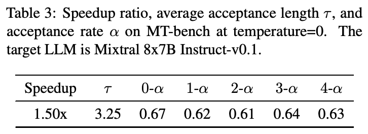
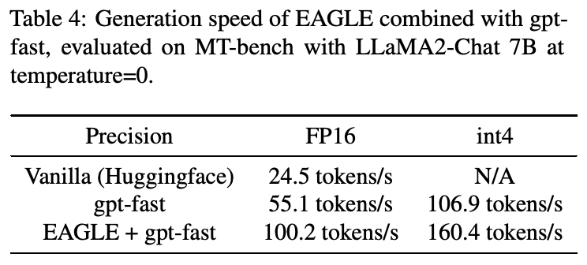
4.2. 案例研究：EAGLE + gpt-fast
EAGLE 与其他加速技术兼容。我们进行了将 EAGLE 与 gpt-fast 结合的实验；gpt-fast 采用量化和编译进行加速。如图 4 所示，将 EAGLE 与 gpt-fast 结合后，我们在单块 RTX 3090 上将 LLaMA2-Chat 7B 的生成速度提高到了 160.4 token/s。
4.3. 消融研究
4.3.1. Tree attention
与 SpecInfer 和 Medusa 一样，EAGLE 采用 tree attention，草稿的生成和验证均为树形结构。相比之下，speculative sampling 等方法不使用 tree attention，因此草稿生成和验证为链式结构。表 5 和图 7 展示了采用 tree attention 的影响。EAGLE 实现树形草稿和验证后，平均接受长度增加约 0.6–0.8，加速比增加约 0.3–0.5。相比链式草稿和验证，树形草稿和验证不会增加模型（目标 LLM 和草稿模型）的前向计算次数，但会增加每次前向计算处理的 token 数。因此，加速比的改善幅度小于平均接受长度的增长幅度。值得注意的是，即便不采用树形草稿和验证，EAGLE 仍呈现显著的加速效果，加速比约为 2.3–2.7 倍。（本句原文跨页，已接续。）
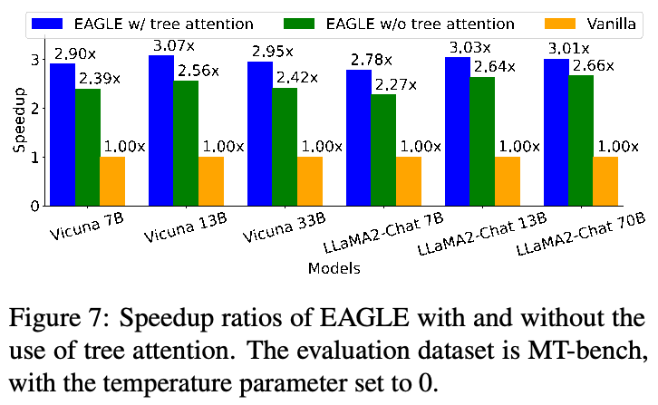
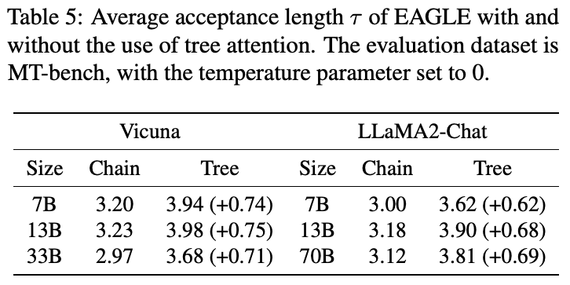
（本页开头关于不使用 tree attention 时加速比的跨页句已接续至第 6 页。）
4.3.2. 草稿模型的输入
相比其他基于 speculative sampling 的方法，EAGLE 的关键创新在于利用目标 LLM 计算得到的特征，并将采样结果加入草稿模型的输入，以解决随机性问题。我们在 Vicuna 7B 上进行了消融研究，评估不同输入的草稿模型。我们测试了四种输入：feature&shifted-token（EAGLE）、feature&unshifted-token、token 和 feature。feature&shifted-token（EAGLE）和 feature&unshifted-token 都融合了不同层次的语义信息。区别在于 feature&shifted-token（EAGLE）输入的是提前一个时间步的 token，因此能够有效处理随机性。除 feature&token 输入需要使用 FC 层降维之外，草稿模型的结构完全一致。图 8 展示了以 Vicuna 7B 为目标 LLM、在 MT-bench 上的实验结果。可以得到三个观察。
- 首先，当草稿模型的参数量受限时，利用特征的效果略好于利用 token。
- 其次，融合特征与 token 会适度改善性能，主要是因为离散、无误差的 token 能缓解特征误差积累。这一点体现在 feature&unshifted-token 和仅使用 feature 的草稿模型具有相似的 \(0\text{-}\alpha\)，但前者的 \(1\text{-}\alpha\) 显著更高。
- 第三，处理采样过程固有的随机性带来最显著的改善。相比 feature&unshifted-token，feature&shifted-token 方案没有增加复杂度，只需将 token 提前一个时间步，让草稿模型能够考虑采样随机性，就显著增强了模型能力。
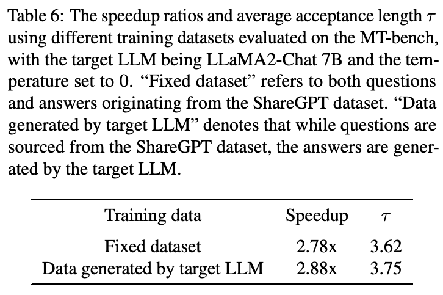
4.3.3. 训练数据
EAGLE 使用固定数据集训练，避免使用目标 LLM 生成训练数据带来的额外开销。消融研究（见表 6）表明，目标 LLM 的数据仅略微改善性能，说明 EAGLE 对训练数据不敏感，也支持使用固定数据集来降低成本。
4.4. Batch size 与吞吐量
LLM 的推理受到内存带宽限制（Patterson, 2004; Shazeer, 2019），GPU 的计算资源未得到充分利用。基于 speculative sampling 的方法能够提高生成速度，原理在于更有效地利用 GPU 计算资源。随着 batch size 增大，GPU 可用计算能力减少，导致加速效果下降。本节展示 batch size 大于 1 时的实验结果。如表 7 所示，加速比随 batch size 增大而下降。当目标 LLM 为 Vicuna 7B 时，bs=4 的加速比高于 bs=3。这是因为在 EAGLE 的验证阶段，目标 LLM 一次前向计算处理多个 token，而 bs=4 时的处理速度快于 bs=3。相比之下，常规自回归 decoding 每次前向计算只处理一个 token，bs=3 和 bs=4 的速度几乎相同。（本句原文跨页，已接续。）
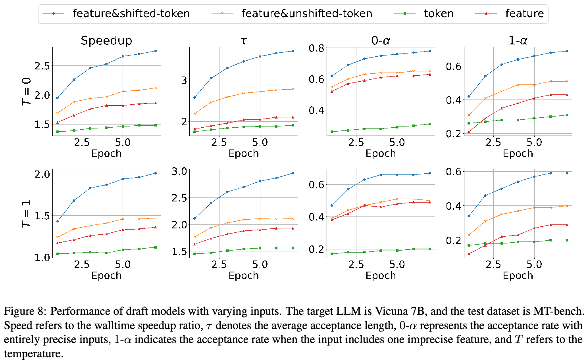
（本页开头关于 bs=3 与 bs=4 速度相近的跨页句已接续至第 7 页。）
尽管基于 speculative sampling 的方法主要关注延迟，我们也研究了 EAGLE 在 batch size > 1 时的吞吐量，这也是 LLM 系统的另一项关键指标。相比常规自回归 decoding，EAGLE 需要略多一些 CUDA 显存。以 Vicuna 7B 为目标 LLM，在单块 RTX 3090 的 24G CUDA 显存限制下，常规自回归 decoding 和 EAGLE 的最大 batch size（bs）分别为 8 和 7。对于 LLaMA2-Chat 70B，在 4 块 A100（40G）GPU、合计 160G CUDA 显存的限制下，两者的最大 bs 分别为 5 和 4。所有评估均使用 FP16 精度。我们计算不同 bs 下的吞吐量，并选择最大值。常规自回归 decoding 和 EAGLE 都在各自最大的 bs 下达到最大吞吐量。Tree attention 消耗更多计算资源。bs=7 时，计算资源不再充裕，因此不使用 tree attention 更有利。如表 7 所示，EAGLE 实现了两倍的吞吐量。
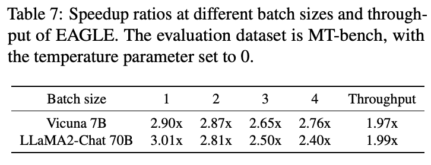
5. 相关工作
关于语言模型加速已有大量研究，涉及蒸馏（Hinton et al., 2015）、量化（Hubara et al., 2018; Shen et al., 2020; Kim et al., 2021; Zadeh et al., 2020; Zafrir et al., 2019）、剪枝（Gale et al., 2019; Sanh et al., 2020; Kurtic et al., 2022; Voita et al., 2019）以及创新的网络架构设计（Gu & Dao, 2023; Wu et al., 2020）。这些方法旨在减少每次前向计算的延迟。
与我们的方法相似的是基于 speculative sampling 的框架。早期工作（Stern et al., 2018; Sun et al., 2021）加速贪心 decoding，而 speculative sampling（Leviathan et al., 2023; Chen et al., 2023a）将其扩展到非贪心采样，并可证明地保持原始输出分布。保证输出分布不变使加速更具挑战性；许多研究作为折中探索了有损加速。例如，（接下页）
（接上页）DistillSpec（Zhou et al., 2023）使用宽容函数修改接受概率；BiLD（Kim et al., 2023）在与目标 LLM 分布的距离指标低于某个阈值时接受草稿；Medusa（Cai et al., 2023）采用硬阈值与依赖熵的阈值二者中的较小值进行截断。相比之下，EAGLE 不采用任何放宽措施，保持 LLM 的输出分布不变。
基于 speculative sampling 的方法之间的主要区别体现在草稿阶段。Speculative sampling（Leviathan et al., 2023; Chen et al., 2023a）将目标 LLM 的低参数版本作为草稿模型。Self-Speculative Decoding（Zhang et al., 2023）在生成草稿时跳过目标 LLM 的部分层。SpecInfer（Miao et al., 2023）使用一组小模型并行生成草稿。Cascade Speculative Drafting（Chen et al., 2023b）和 Staged Speculative Decoding（Spector & Re, 2023）级联不同开销的草稿模型。Online Speculative Decoding（Liu et al., 2023）在查询分布上训练草稿模型。Medusa（Cai et al., 2023）等方法（Hooper et al., 2023; Fu et al., 2023; Yang et al., 2023b）不采用单独的目标 LLM，而是利用目标 LLM 的特征或权重生成草稿。REST（He et al., 2023）通过检索生成草稿。LLMA（Yang et al., 2023a）用于语法纠错等输入输出重合的任务，直接从输入中检索草稿。
6. 结论
本文提出了高效的 speculative sampling 框架 EAGLE。EAGLE 在结构性更强的（倒数第二层）特征层面自回归地生成草稿，并通过引入提前一个时间步的 token，缓解下一特征预测中的采样不确定性。EAGLE 保证 LLM 的输出分布不变，同时显著提高生成速度。在 MT-bench 上，EAGLE 相比常规自回归 decoding 快 2.1–3.8 倍，相比 Lookahead 快 1.7–2.1 倍，相比 Medusa 快 1.5–1.6 倍。
致谢。感谢与 Medusa 团队负责人 Tianle Cai、Lookahead 团队负责人 Hao Zhang、SpecTr 团队负责人 Ziteng Sun 的有益讨论，感谢在 X 上与 gpt-fast 团队负责人 Horace He 和 Soumith Chintala 的交流，以及 Yihan Wu。
参考文献
Cai, T., Li, Y., Geng, Z., Peng, H., and Dao, T. Medusa：通过多个 decoding 头加速 LLM 生成的简单框架。https://github.com/FasterDecoding/Medusa, 2023.
Chen, C., Borgeaud, S., Irving, G., Lespiau, J.-B., Sifre, L., and Jumper, J. 使用 speculative sampling 加速大语言模型 decoding。arXiv preprint arXiv:2302.01318, 2023a.
Chen, M., Tworek, J., Jun, H., Yuan, Q., Pinto, H. P. d. O., Kaplan, J., Edwards, H., Burda, Y., Joseph, N., Brockman, G., et al. 评估在代码上训练的大语言模型。arXiv preprint arXiv:2107.03374, 2021.
Chen, Z., Yang, X., Lin, J., Sun, C., Huang, J., and Chang, K. C.-C. 通过级联 speculative drafting 进一步加速 LLM 推理。arXiv preprint arXiv:2312.11462, 2023b.
Cobbe, K., Kosaraju, V., Bavarian, M., Chen, M., Jun, H., Kaiser, L., Plappert, M., Tworek, J., Hilton, J., Nakano, R., et al. 训练验证器求解数学文字题。arXiv preprint arXiv:2110.14168, 2021.
Fu, Y., Bailis, P., Stoica, I., and Zhang, H. 使用 Lookahead decoding 打破 LLM 推理的顺序依赖。2023 年 11 月。URL https://lmsys.org/blog/2023-11-21-lookahead-decoding/.
Gale, T., Elsen, E., and Hooker, S. 深度神经网络稀疏性的现状。(2019). arXiv preprint cs.LG/1902.09574, 2019.
Gu, A. and Dao, T. Mamba：采用选择性状态空间的线性时间序列建模。arXiv preprint arXiv:2312.00752, 2023.
He, Z., Zhong, Z., Cai, T., Lee, J. D., and He, D. REST：基于检索的 speculative decoding。arXiv preprint arXiv:2311.08252, 2023.
Hinton, G., Vinyals, O., and Dean, J. 蒸馏神经网络中的知识。arXiv preprint arXiv:1503.02531, 2015.
Hooper, C., Kim, S., Mohammadzadeh, H., Genc, H., Keutzer, K., Gholami, A., and Shao, S. SPEED：用于高效 decoding 的推测流水线执行。arXiv preprint arXiv:2310.12072, 2023.
Hubara, I., Courbariaux, M., Soudry, D., El-Yaniv, R., and Bengio, Y. 量化神经网络：使用低精度权重和激活训练神经网络。Journal of Machine Learning Research, 18(187):1–30, 2018.
Jain, N., Chiang, P.-y., Wen, Y., Kirchenbauer, J., Chu, H.-M., Somepalli, G., Bartoldson, B. R., Kailkhura, B., Schwarzschild, A., Saha, A., et al. NEFTune：带噪 embeddings 改善指令微调。arXiv preprint arXiv:2310.05914, 2023.
Kim, S., Gholami, A., Yao, Z., Mahoney, M. W., and Keutzer, K. I-BERT：仅使用整数的 BERT 量化。载于 International Conference on Machine Learning, pp. 5506–5518. PMLR, 2021.
Kim, S., Mangalam, K., Moon, S., Malik, J., Mahoney, M. W., Gholami, A., and Keutzer, K. 使用 Big Little Decoder 的 speculative decoding。载于 Thirty-seventh Conference on Neural Information Processing Systems, 2023.
Kurtic, E., Campos, D., Nguyen, T., Frantar, E., Kurtz, M., Fineran, B., Goin, M., and Alistarh, D. 最优 BERT 外科医生：适用于大语言模型的可扩展、精确二阶剪枝。arXiv preprint arXiv:2203.07259, 2022.
Leviathan, Y., Kalman, M., and Matias, Y. 通过 speculative decoding 实现 transformer 快速推理。载于 International Conference on Machine Learning, pp. 19274–19286. PMLR, 2023.
Liu, X., Hu, L., Bailis, P., Stoica, I., Deng, Z., Cheung, A., and Zhang, H. 在线 speculative decoding。arXiv preprint arXiv:2310.07177, 2023.
Miao, X., Oliaro, G., Zhang, Z., Cheng, X., Wang, Z., Wong, R. Y. Y., Chen, Z., Arfeen, D., Abhyankar, R., and Jia, Z. SpecInfer：通过推测推理和 token 树验证加速生成式 LLM 服务。arXiv preprint arXiv:2305.09781, 2023.
Patterson, D. A. 延迟落后于带宽。Communications of the ACM, 47(10):71–75, 2004.
PyTorch Labs. gpt-fast. https://github.com/pytorch-labs/gpt-fast/, 2023.
Sanh, V., Wolf, T., and Rush, A. Movement pruning：通过微调实现自适应稀疏性。Advances in Neural Information Processing Systems, 33:20378–20389, 2020.
Santilli, A., Severino, S., Postolache, E., Maiorca, V., Mancusi, M., Marin, R., and Rodola, E. 通过并行 decoding 加速用于翻译的 transformer 推理。载于 Rogers, A., Boyd-Graber, J., and Okazaki, N.（编），Proceedings of the 61st Annual Meeting of the Association for Computational Linguistics (Volume 1: Long Papers), pp. 12336–12355, Toronto, Canada, July 2023. Association for Computational Linguistics. doi: 10.18653/v1/2023.acl-long.689. URL https://aclanthology.org/2023.acl-long.689.
Shazeer, N. 快速 transformer decoding：只需一个写入头。arXiv preprint arXiv:1911.02150, 2019.
Shen, S., Dong, Z., Ye, J., Ma, L., Yao, Z., Gholami, A., Mahoney, M. W., and Keutzer, K. Q-BERT：基于 Hessian 的 BERT 超低精度量化。载于 Proceedings of the AAAI Conference on Artificial Intelligence, volume 34, pp. 8815–8821, 2020.
Spector, B. and Re, C. 使用分阶段 speculative decoding 加速 LLM 推理。arXiv preprint arXiv:2308.04623, 2023.
Stern, M., Shazeer, N., and Uszkoreit, J. 深度自回归模型的分块并行 decoding。Advances in Neural Information Processing Systems, 31, 2018.
Sun, X., Ge, T., Wei, F., and Wang, H. 使用浅层激进 decoding 实现即时语法纠错。arXiv preprint arXiv:2106.04970, 2021.
Taori, R., Gulrajani, I., Zhang, T., Dubois, Y., Li, X., Guestrin, C., Liang, P., and Hashimoto, T. B. Stanford Alpaca：遵循指令的 LLaMA 模型。https://github.com/tatsu-lab/stanford_alpaca, 2023.
Touvron, H., Martin, L., Stone, K., Albert, P., Almahairi, A., Babaei, Y., Bashlykov, N., Batra, S., Bhargava, P., Bhosale, S., et al. LLaMA 2：开放基础模型和经过微调的聊天模型。arXiv preprint arXiv:2307.09288, 2023.
Voita, E., Talbot, D., Moiseev, F., Sennrich, R., and Titov, I. 分析多头 self-attention：专门化的头承担主要工作，其余头可以剪枝。arXiv preprint arXiv:1905.09418, 2019.
Wu, Z., Liu, Z., Lin, J., Lin, Y., and Han, S. 采用长短程 attention 的 Lite transformer。arXiv preprint arXiv:2004.11886, 2020.
Xia, H., Ge, T., Wang, P., Chen, S.-Q., Wei, F., and Sui, Z. Speculative decoding：利用推测执行加速 seq2seq 生成。载于 Findings of the Association for Computational Linguistics: EMNLP 2023, pp. 3909–3925, 2023.
Yang, N., Ge, T., Wang, L., Jiao, B., Jiang, D., Yang, L., Majumder, R., and Wei, F. 带参考的推理：大语言模型的无损加速。arXiv preprint arXiv:2304.04487, 2023a.
Yang, S., Lee, G., Cho, J., Papailiopoulos, D., and Lee, K. 预测式流水线 decoding：精确 LLM decoding 的计算与延迟权衡。arXiv preprint arXiv:2307.05908, 2023b.
Zadeh, A. H., Edo, I., Awad, O. M., and Moshovos, A. GOBO：量化基于 attention 的 NLP 模型，实现低延迟和高能效推理。载于 2020 53rd Annual IEEE/ACM International Symposium on Microarchitecture (MICRO), pp. 811–824. IEEE, 2020.
Zafrir, O., Boudoukh, G., Izsak, P., and Wasserblat, M. Q8BERT：量化 8 位 BERT。载于 2019 Fifth Workshop on Energy Efficient Machine Learning and Cognitive Computing-NeurIPS Edition (EMC2-NIPS), pp. 36–39. IEEE, 2019.
Zhang, J., Wang, J., Li, H., Shou, L., Chen, K., Chen, G., and Mehrotra, S. 草稿与验证：通过 self-speculative decoding 无损加速大语言模型。arXiv preprint arXiv:2309.08168, 2023.
Zhang, P., Zeng, G., Wang, T., and Lu, W. TinyLlama：开源小语言模型。arXiv preprint arXiv:2401.02385, 2024.
Zheng, L., Chiang, W.-L., Sheng, Y., Zhuang, S., Wu, Z., Zhuang, Y., Lin, Z., Li, Z., Li, D., Xing, E., et al. 利用 MT-bench 和 Chatbot Arena 评判 LLM-as-Judge。arXiv preprint arXiv:2306.05685, 2023.
Zhou, Y., Lyu, K., Rawat, A. S., Menon, A. K., Rostamizadeh, A., Kumar, S., Kagy, J.-F., and Agarwal, R. DistillSpec：通过知识蒸馏改进 speculative decoding。arXiv preprint arXiv:2310.08461, 2023.
A. 实现细节
A.1. 树结构
EAGLE 利用 tree attention 生成树形草稿。图 9 左侧展示草稿的树结构，右侧展示不使用 tree attention 时对应的链式草稿（用于第 4.3.1 节的消融研究）。在贪心设置中，我们选择概率最高的前 \(k\) 个 token 作为子节点。在非贪心设置中，我们采样 \(k\) 个 token。子节点数量 \(k\) 可由图 9 得到；例如，根节点的 \(k=4\)。无论采用树形还是链式草稿，草稿模型在草稿阶段均执行 5 次前向计算。在验证阶段，通过目标 LLM 的一次前向计算获得每个 token 的概率。
为什么采用这样的树结构？图 9 所示树结构的选择没有经过严格优化，而是基于直觉：概率较高的 token 所在分支应当更深、更宽。本文所有实验中的全部模型均采用图 9 所示的草稿结构。然而，最优树结构可能依赖上下文。例如，随着 batch size 增大、冗余计算资源减少，较小的树可能更合适。调整草稿结构有望进一步改善性能。
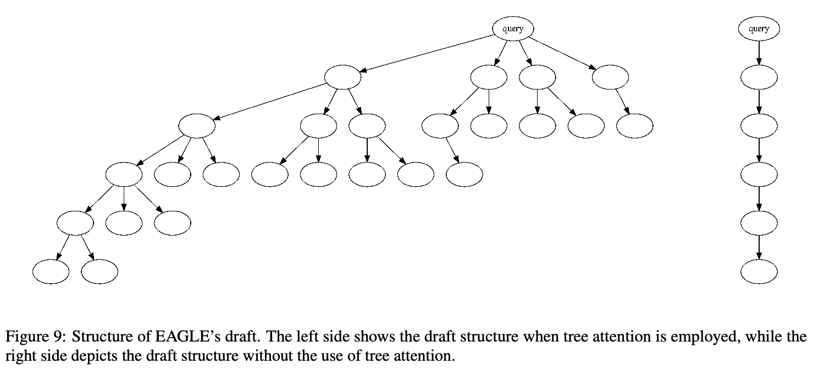
A.2. 多轮 speculative sampling
不同于 speculative sampling 的链式草稿，EAGLE 采用树形草稿，因此需要修改采样算法。Speculative sampling 的采样算法 A 可简述为：如果接受某个 token，就返回该 token；否则，从调整后的分布采样一个 token。对于包含 \(k\) 个候选 token 的树形草稿，多轮 speculative sampling 递归调用算法 A。拒绝某个 token 后，多轮 speculative sampling 不直接从调整后的分布采样，而是再次调用 A。如果全部 token 都被拒绝，才直接从调整后的分布中采样。多轮 speculative sampling 的伪代码见算法 1。
B. 详细实验结果
表 8 展示了 EAGLE 在 HumanEval、GSM8K 和 Alpaca 数据集上的加速比、平均接受长度 \(\tau\) 和接受率 \(\alpha\)。
算法 1 多轮 speculative sampling
输入：目标分布 \(p\)，对每个 \(i=1,\ldots,k\) 给出样本 \(t_i\) 及分布 \(\hat p_i\)，其中 \(t_i\) 从 \(\hat p_i\) 采样。
输出：一个样本 \(x\sim p\)。
- \(i\leftarrow1\)。
- 当 \(i\leq k\) 时循环：
- \(r\leftarrow U(0,1)\)。
- 如果 \(r<p(t_i)/\hat p_i(t_i)\)，返回 \(t_i\)。
- \(p\leftarrow\operatorname{norm}(\max(0,p(t_i)-\hat p_i(t_i)))\)。
- \(i\leftarrow i+1\)。
- 采样 \(t\sim p\)。
- 返回 \(t\)。
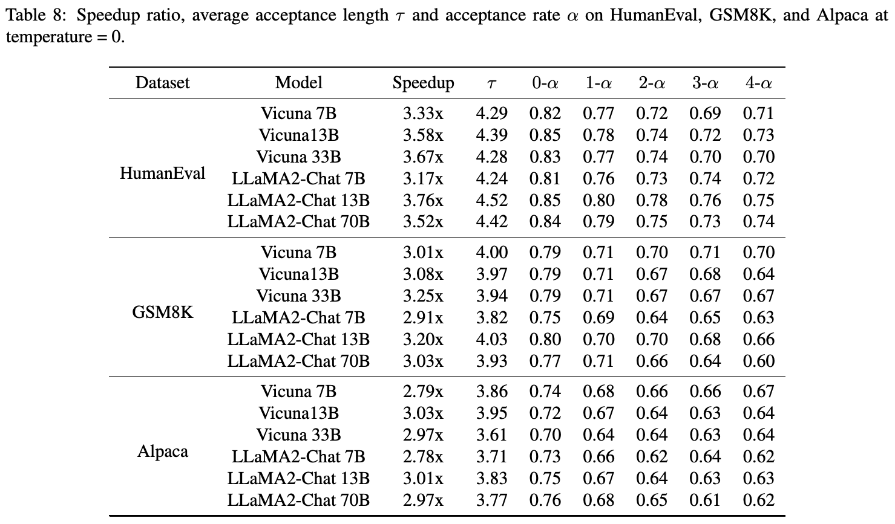